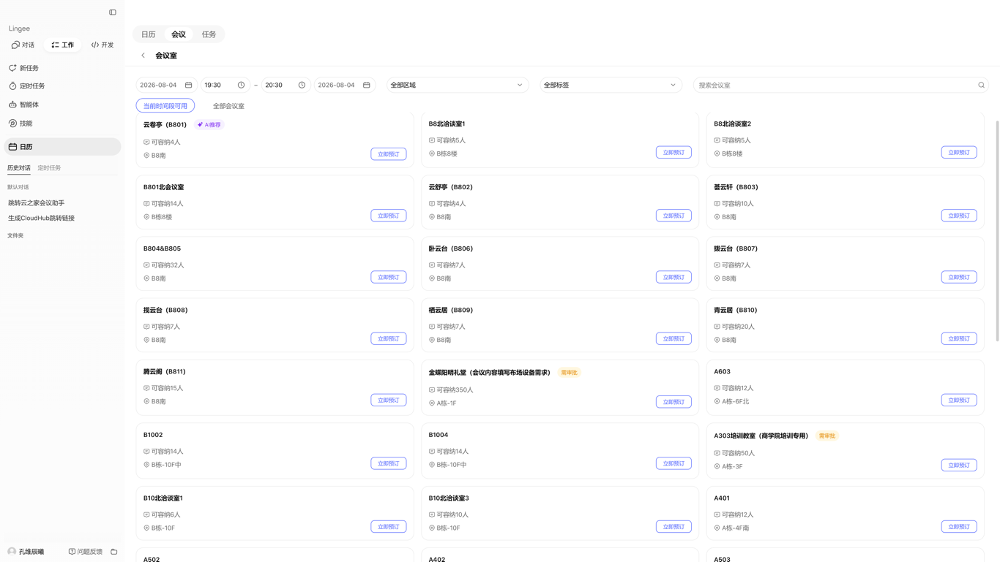
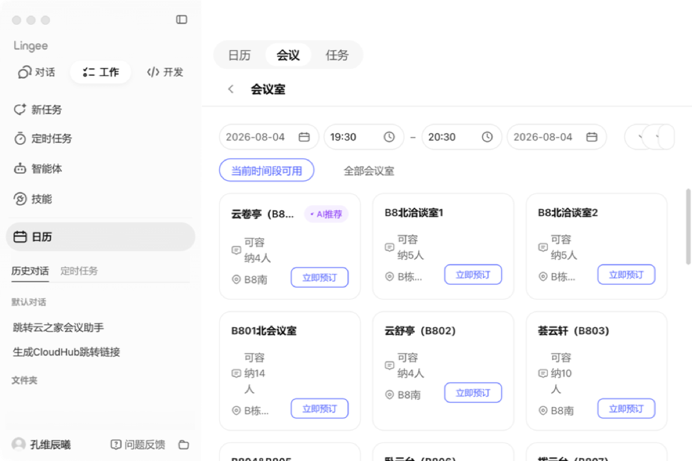
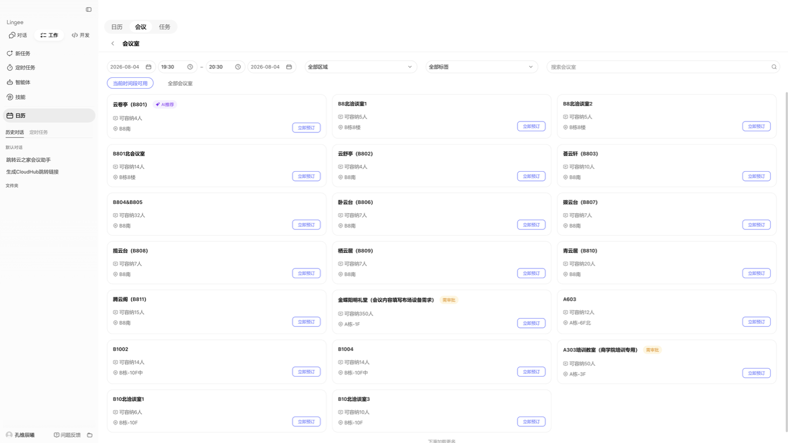
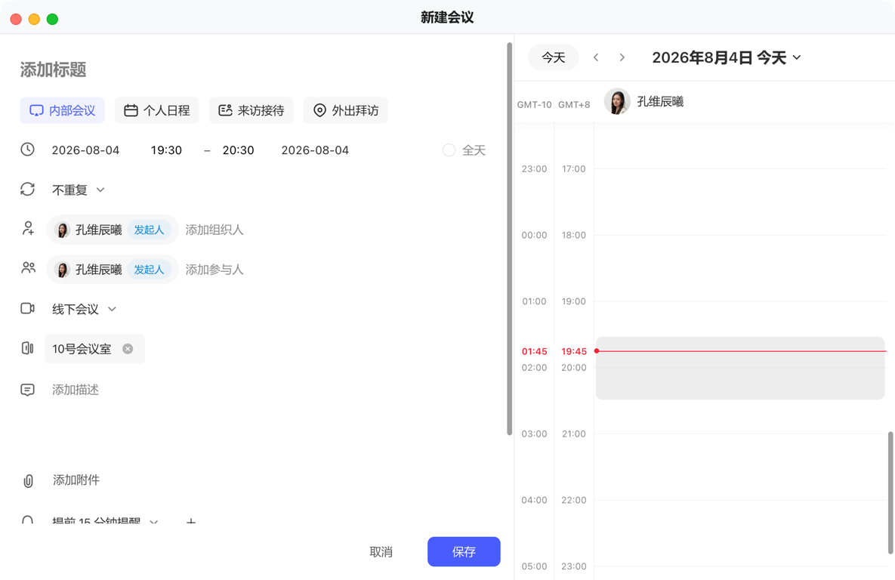
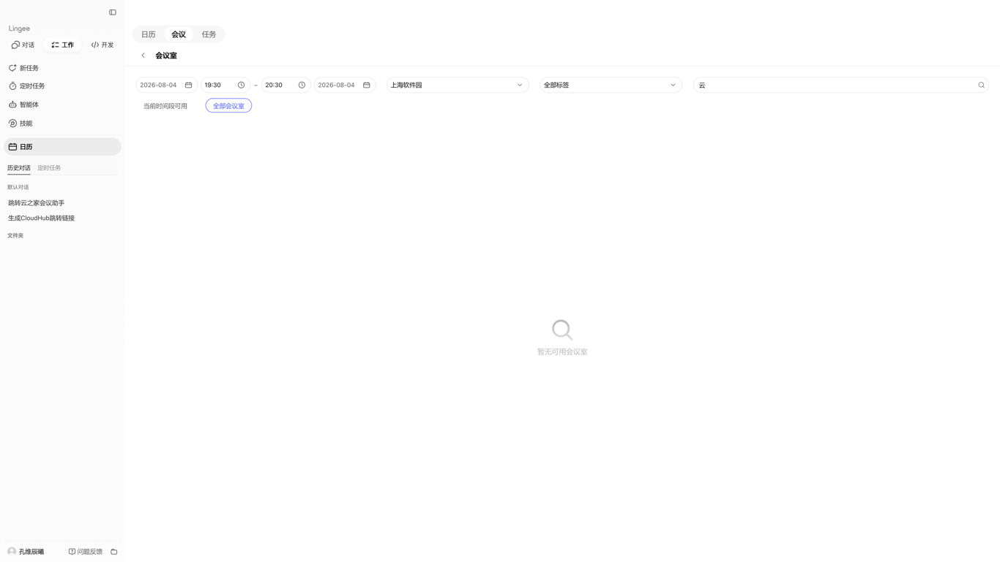
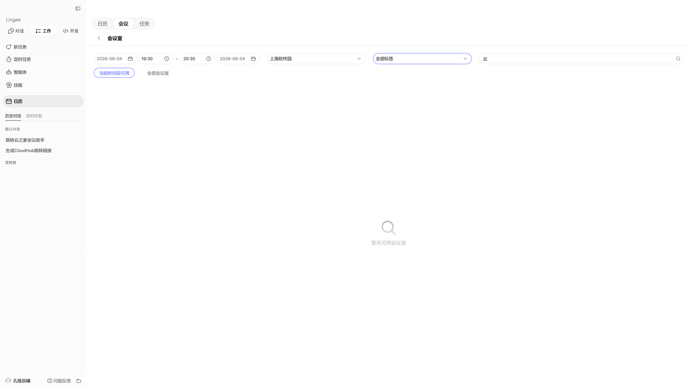
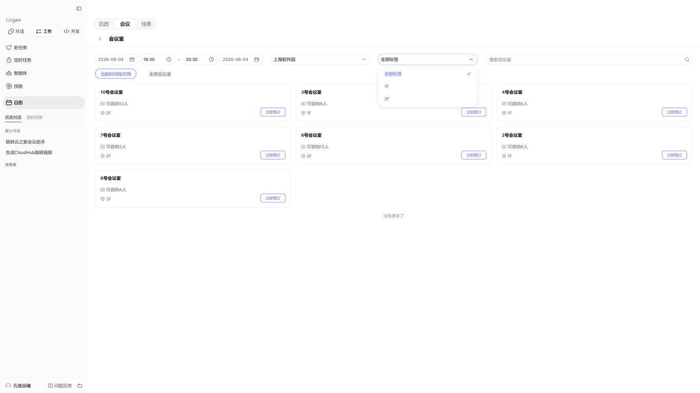
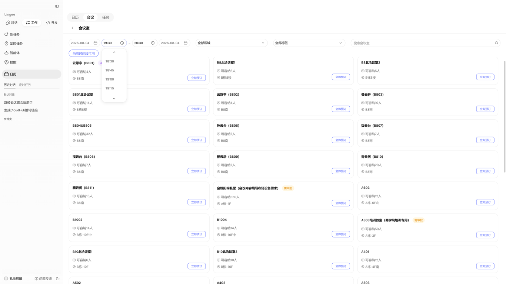
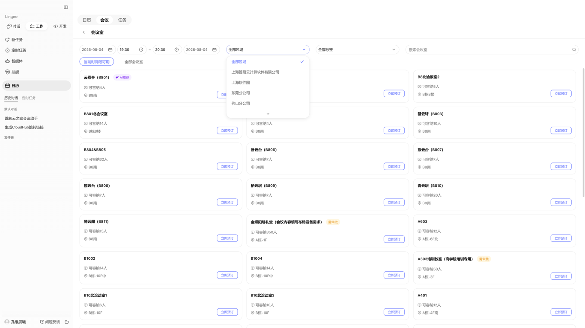

共发现 23 个问题，其中响应式布局和规范对照维度问题集中。极限边界、暗黑模式、国际化维度本次未覆盖，后续可补充。Token 绑定和 Variant 完整性需 Playwright 深度检测。

顶部筛选栏（日期、时间、区域、标签、搜索）+ 会议室卡片列表（3列网格）+ 左侧导航栏。窗口约 1280×800px。

x-small(8px) 或 medium(16px)。筛选栏应自适应容器宽度。4px 网格，卡片间距应为 medium(16px) 或 large(20px)。响应式应 3列→2列→1列。white-space: nowrap，作为不可拆分的 inline-flex 元素。title tooltip；或允许名称两行显示；窄屏时优先保证地点信息完整。
max-width；超宽时增加列数至4列；或将列表容器 max-width 并居中。white-space: nowrap，图标+文本整体作为 inline-flex 不可拆分元素。
small=460px / medium=640px / large=720px。当前 1080px 超出最大规格 50%。sm=24px / md=28px / std=32px / lg=36px。实测约 22-24px，偏差 4-6px，低于最小规格 sm。sm/md/lg 三种尺寸，shape 为 pill 或 rounded，color 为 info/primary/success/warning/danger 六选一。
segmented/solid/outline/underline 四种。当前类似 segmented 但选中反馈偏弱。
showSearch + filterOption，应有搜索建议交互。Lingee Empty 组件提供空状态规范。
border: #495DFF 1px（主色描边），默认态 border: rgba(0,0,0,0.08) 1px。
rgba(0,0,0,0.08), hover/open #495DFF。只读态应禁用文本选中。
showSearch 属性，开启搜索可显著提升长列表可用性。showSearch）。--lg-* CSS 变量而非硬编码 #495DFF。